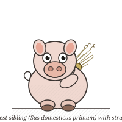
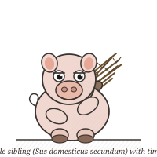
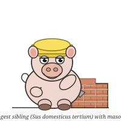
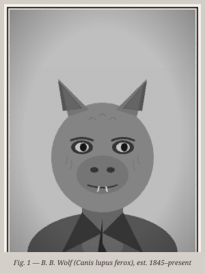

Beloved by Parental Figures Everywhere as a story about the virtue of hard work, and by literary theorists as a story about Survivorship Bias. The wolf's motivations remain Ambiguously Evil to this day.
Tropes A–F (10 tropes)
- Always Someone Better — Pig 3 is to Pig 1 and Pig 2 what a Reinforced Concrete Wall is to a fruit salad. Pig 3 completed her brick house on a Sunday and spent the remainder of the week reviewing load-bearing specifications. Neither sibling has commented publicly.
-
Attention Deficit... Oh Shiny — Pig 1's total construction timeline has been estimated at forty-five minutes, including a lunch break. She declared herself finished when the walls were "basically up" and went to find a meadow. This is presented, in the original text, without irony.
This troper built a straw fort as a child. Can confirm. It lasted until a light breeze from a passing car took out the eastern wall.
- Big Bad — The Wolf. The Trope Namer isn't quite this wolf — that's a different franchise — but close enough that the lawyers haven't weighed in.
- Building of Adventure — All three houses qualify, briefly. In Pig 1's case, very briefly.
-
Cassandra Truth — Pig 3 sent both siblings a Strongly Worded Letter regarding wind-load tolerances, compressive strength-to-weight ratios, and the inadvisability of organic thatching without adequate waterproofing. The letters were returned unopened. Pig 3 has kept them.
This troper's mother always skipped the second pig entirely to get to the wolf scene faster. The letter subplot was thus lost to an entire generation.
- Combat Pragmatist — The Wolf never physically attacks the pigs. He identifies structural vulnerabilities and applies pneumatic pressure to exploit them. This is, by some readings, a sophisticated form of Psychological Warfare. By other readings, he is just blowing very hard.
- Death Trap — The straw house in a strong breeze. Also, arguably, during construction, due to No OSHA Compliance (see below). Pig 1 disputes this characterization and maintains that the house was "a vibe."
- Determinator — Pig 3 lays 2,847 individual bricks before considering herself done. She uses a spirit level. She checks corners twice. She is the protagonist this story deserves and the one most children underestimate until adulthood.
- Evil Sounds Deep — The Wolf's speaking voice registers at approximately 40 Hz. [citation needed] This is deeper than most tubas. Forest wildlife have reportedly begun subwoofer-related insurance claims.
- Foreshadowing — The straw blows away when Pig 1 sneezes near it during construction. She reassembles it and calls it "artistic texture." The wolf arrives approximately twelve pages later.
Tropes G–M (6 tropes)
- Genre Savvy — Pig 3 has clearly read the Trope Page. She builds in brick. She installs a chimney with a grate. She stockpiles provisions. She has read every Wolf Attack Survival Guide available in the forest library. She is prepared. She is, arguably, the only character in this work behaving rationally.
- Glass Cannon — Pig 1's straw house looks magnificent in the portfolio shots. Excellent natural light. Strong rustic aesthetic. Collapses at approximately 15 mph wind speed. HGTV has not returned calls.
- Hoist by His Own Petard — The Wolf's lungs give out after the brick house attempt. He is last seen wheezing in a meadow. Pig 3 reportedly sends a get-well card annually. It is not clear whether this is kindness or Passive-Aggressive Gesture.
- Informed Ability — The Wolf insists he can blow down "any house." The brick house disagrees. This claim now appears on his resume under "Skills," unmodified.
- It's Personal — By the third house, the Wolf's motivation has visibly shifted from hunger to Wounded Pride. He is no longer doing this for food. He is doing this because a pig said bricks were stronger and he simply cannot let that stand.
- Karma Houdini Warranty — The Wolf successfully demolishes two houses. By the third, the warranty expires. Pig 3's brickwork voided it retroactively. The insurance adjusters have been notified.
Tropes N–Z (8 tropes)
-
No OSHA Compliance — Pig 1's building site has zero safety signage, no hard-hat zone demarcation, and the structural integrity assessment was apparently conducted by looking at it and saying "yeah, that's fine." The Forest Safety Board has opened an inquiry.
This troper worked in construction and this really bothered me. No scaffolding. No toe boards. Nothing. She didn't even have a hi-viz vest.↳ To be fair, she's a pig. The vis would never fit.
- The Pig Pen — Averted. These pigs are remarkably tidy. Pig 3's brick house has been described by visitors as "almost uncomfortably organized." Pig 1's straw house was also technically clean, in the brief period it stood.
- Pyrrhic Victory — The Wolf destroys two houses. He is now exhausted, wheezing, 0 for 3 against brick architecture, and has developed what woodland medical staff have diagnosed as a deviated septum. He won the battles and lost the war, the structural engineering competition, and his respiratory health.
- Rule of Three — Three pigs. Three houses. Three attempts. Three materials. Three narrative beats. TV Tropes wouldn't have it any other way. (This wiki runs on this trope, come to think of it.)
- Shown Their Work — Pig 3's brick coursework is structurally accurate. Flemish bond pattern, appropriate mortar joints, correct header-to-stretcher ratio. Civil engineers who have reviewed available illustrations confirm: that house is not coming down. Not from wind. Not from a wolf. Possibly not from anything short of a controlled demolition permit.
- Too Dumb to Live — Pig 1 builds in straw and calls it a day. Pig 2 watches Pig 1's house blow down and builds in sticks anyway. Both characters have subsequently claimed this was about "freedom of expression." The wolf was unavailable for comment but did leave a voicemail.
-
Villain Has a Point — The Wolf has, in several revisionist adaptations, argued that he just wanted somewhere warm to sleep and that the pigs' property values were inflating the local housing market. Nobody asked. The narrative does not engage with this. The wolf ends the story alone in a field.
This troper finds the wolf genuinely sympathetic and has written 40,000 words of fanfiction exploring his backstory. It's linked in the Fanfic Recs tab.
- Warm Place, Warm Heart — The brick house is cozy and warm. A fire burns. There is presumably soup. All three pigs are together and safe. The story ends here. That's the whole story. Everyone's okay. Genuinely, for a fairy tale, that's remarkable.
Characters are listed in order of structural common sense, ascending.




Big Bad · Evil Sounds Deep · Determinator (tragically applied) · Pyrrhic Victory · Villain Has a Point
"Wolf huffs and puffs at three increasingly sturdy houses. First two fall. Third doesn't. Everyone survives."
The Wolf's stated motivation is never quite clear. He wants to eat the pigs in some versions, which is at least honest hunger. In others, he seems to simply want them out of the forest. A small but vocal contingent of tropers maintains that the Wolf was, in fact, looking for warmth and shelter and simply expressed this very badly. The brick house would have had room. Nobody offered.
Think you've found a new trope lurking in The Three Little Pigs? Create an article for it below. Note: if the trope already exists, you will be redirected to that page. If it exists but was deleted, you will be redirected to a message explaining why it was deleted, which you will probably disagree with.
Please check the Five P Guide before creating. TV Tropes is not a dumping ground. This is a lie we tell ourselves.
Leave a message for other tropers about this work. Be kind. No spoilers in the first line. No natter.